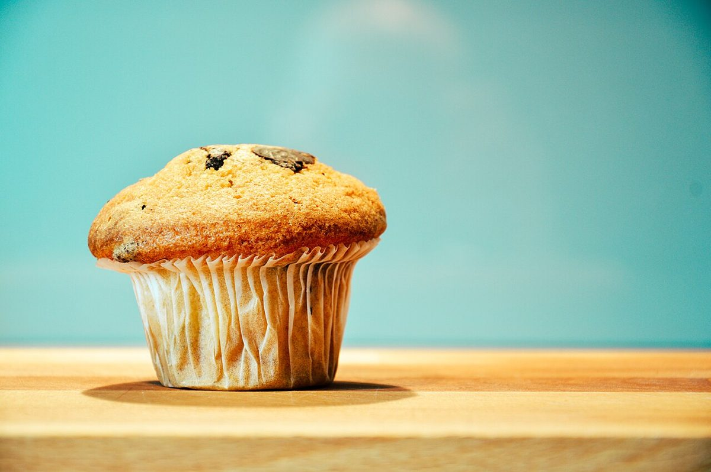
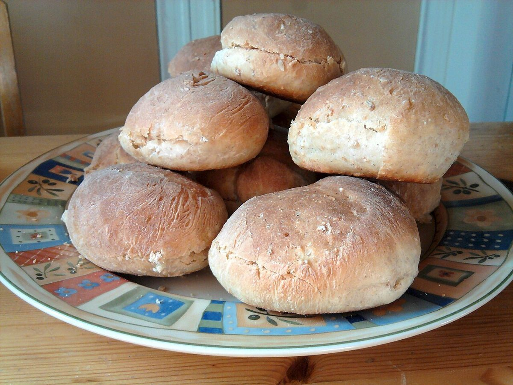
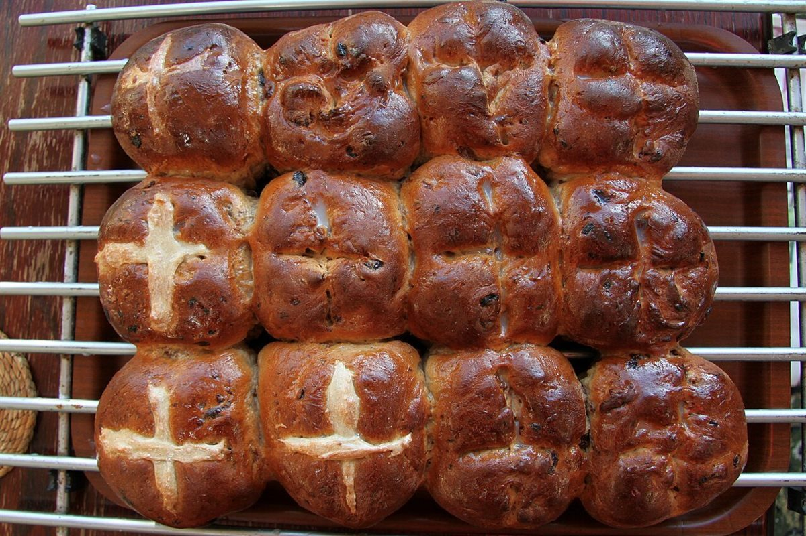
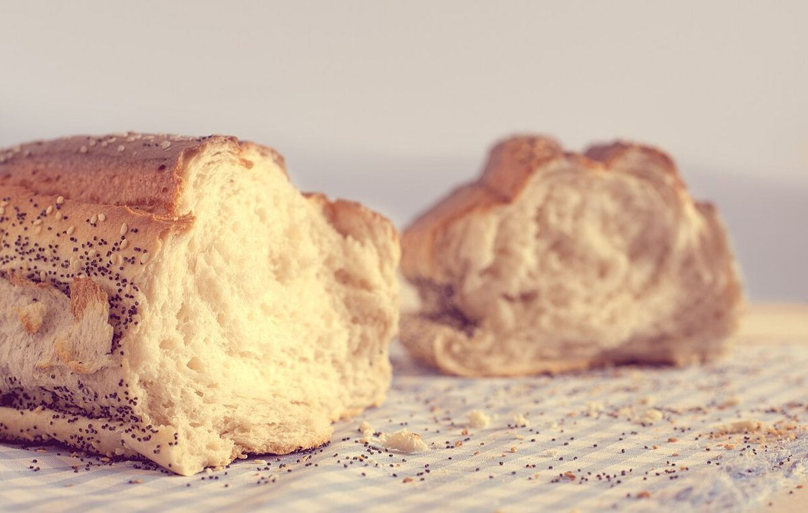

制作側の連想
屋号の響きから、指輪のサイズ見本へ
「モンシェリー」はフランス語で「私のいとしい人」を意味する言葉の響きに近い、と制作側は受け取りました(お店の由来は分かりません)。そこから連想したのが、指輪のサイズを測るリングゲージの番号です。このサイトのページ番号を№7・№9・№11・№13・№15と数え、写真はすべて丸い枠に収めました。制作側の連想で、お店の理念・由来とは無関係です。
リングゲージ
小さな輪から大きな輪まで、5つの番号。

№7
№9
№11
№13 №15
№15
- №7紙カップの焼き菓子
- №9小さな丸パン
- №11並んだ丸パン
- №13ちぎったパン
- №15大きな丸パン
写真はお店や岡山市のものではなく、国外または撮影地不明のフリー素材です。番号と写真の大きさに意味はありません。
ご案内
お店のこと(確認できたものだけ)
| 所在地 | 岡山県岡山市北区花尻あかね町11-130 |
|---|---|
| 電話 | 086-252-2525 |
| 営業時間 | 準備中 |
| 定休日 | 準備中 |
| ご予約 | 準備中 |
| 駐車場 | 準備中 |
| SNS | Instagram @2019.moncheri |